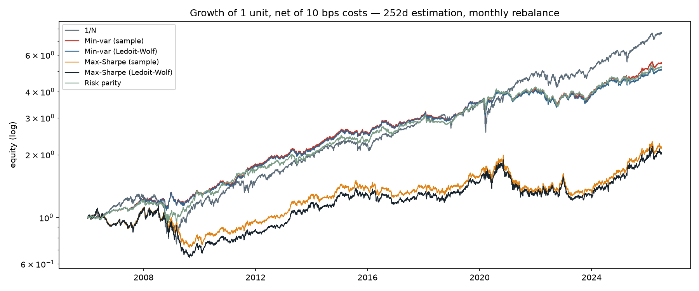
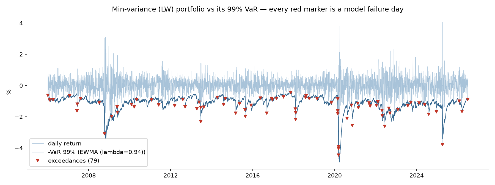

Here is the punchline first: over twenty years of out-of-sample testing, the portfolio strategy explicitly constructed to maximize the Sharpe ratio finished last on Sharpe — 0.30 against 0.74 for the humblest possible alternative, equal weights across the board. The optimizer did not merely fail to add value; it destroyed it, on the exact metric it optimizes. This post is about why that happens, what the industry-standard fix does and doesn't repair, and what I found when I then backtested the resulting portfolio's risk model the way a bank must: every standard VaR model failed twenty years of statistical testing — while remaining comfortably green on the regulatory dashboard.
The setup
Eleven liquid US ETFs (nine sectors, long Treasuries, gold), daily data 2005–2026, and six construction rules racing under one honest protocol: estimate on the trailing 252 days, rebalance every 21, pay 10 basis points per unit of turnover, never peek (the no-look-ahead rule is enforced by a unit test that poisons future data and asserts the weights don't move). The contestants: equal weight (1/N), minimum variance, and maximum Sharpe — the last two each in two flavours, sample covariance and Ledoit-Wolf shrinkage (implemented from the 2004 paper, not imported) — plus risk parity.
| Strategy | Ann. return | Ann. vol | Sharpe | Max DD | Turnover |
|---|---|---|---|---|---|
| 1/N | 11.1% | 15.1% | 0.74 | −42% | 0.00 |
| Min-variance (sample) | 8.7% | 8.3% | 1.04 | −20% | 0.22 |
| Min-variance (Ledoit-Wolf) | 8.3% | 8.3% | 1.00 | −19% | 0.19 |
| Max-Sharpe (sample) | 4.8% | 14.4% | 0.33 | −37% | 1.51 |
| Max-Sharpe (Ledoit-Wolf) | 4.7% | 15.8% | 0.30 | −43% | 1.49 |
| Risk parity | 8.6% | 10.3% | 0.84 | −23% | 0.20 |

Where the poison actually is
Michaud called mean-variance optimization "error maximization" in 1989: hand an optimizer noisy parameter estimates and it loads up on precisely the assets whose parameters are most flattered by noise. DeMiguel, Garlappi and Uppal made the consequence famous in 2009 — naive 1/N beats optimized portfolios out-of-sample with embarrassing regularity. My table reproduces both results, but its internal contrast localizes the poison more precisely than either headline.
Look at min-variance: Sharpe 1.04, at half the volatility of 1/N and half its drawdown. Optimization works there. The difference between the strategy that wins and the strategy that loses is exactly one ingredient: expected returns. Min-variance needs only the covariance matrix; max-Sharpe also needs a forecast of means — and trailing sample means of noisy returns are catastrophically imprecise (Merton pointed this out in 1980: variances are estimable from data at hand; means are not). The error maximizer isn't optimization per se. It's optimization over quantities you cannot estimate.
Which explains the second honest finding: Ledoit-Wolf shrinkage — the industry-standard repair — changed almost nothing here (1.00 vs 1.04; even the turnover barely moved). Not because shrinkage is snake oil, but because at 11 assets and 252 observations the sample covariance was never the bottleneck: its condition number sits at a benign ~63. Shrinkage earns its keep when N/T is large — a bank running five hundred names against one year of history lives in that regime; my toy universe does not, and saying so beats manufacturing a win. One genuinely surprising by-product from the diagnostics: the sample covariance's conditioning is U-shaped in the window length — it improves with data up to about a year, then degrades again as longer windows blend across volatility regimes. More data is only more information if the world holds still.
The bank chapter: green lights and failing brakes
I then took the strategy a practitioner would actually run — min-variance on the shrunk covariance — and backtested its 1-day 99% VaR the way a bank risk team must: count the exceedances, test the count (Kupiec), test the clustering (Christoffersen), and read the Basel traffic light. Five models, forming a 2×2 of distribution × dynamics plus a non-parametric reference:
| VaR model (99%) | Exceedances (expected) | Kupiec p | Christoffersen p | Basel zone |
|---|---|---|---|---|
| Historical (252d) | 68 (49) | 0.010 | 0.000 | green |
| Gaussian (252d) | 92 (49) | 0.000 | 0.000 | green |
| EWMA (λ=0.94) | 79 (52) | 0.000 | 0.008 | green |
| Student-t (252d) | 78 (49) | 0.000 | 0.000 | green |
| EWMA + Student-t (ν=6) | 54 (52) | 0.733 | 0.002 | green |
Two things deserve a slow read. First, the rightmost column: every model is Basel-green, including the Gaussian one that produced nearly twice the exceedances it promised over twenty years. Both verdicts are correct answers to different questions — the traffic light looks at the last 250 days, and at the 99% level that window expects 2.5 exceedances, far too few to distinguish a working model from a broken one. Kupiec said as much in his own 1995 paper. Twenty years of data convicts every standard model; any given regulatory year acquits them. The light is green because the road has been straight lately, not because the brakes work.
Second, the 2×2 structure. Fixing the fat tails alone (Student-t on slow volatility): 78 exceedances. Fixing the dynamics alone (fast EWMA volatility under thin Gaussian tails): 79. Nearly identical — each single repair buys almost nothing. Fixing both at once: 54 against 52 expected, Kupiec p = 0.73, dead-centre calibration. The two failures don't add; they compound — a fat tail hanging off a stale volatility estimate is still a stale forecast.

The residual is honest and has a name: even the calibrated model fails the Christoffersen test (p = 0.002) — the count is right but the exceedances still arrive in bunches at regime onsets, because EWMA adapts in days while markets change in hours. Correct counts, wrong timing. Fixing that requires a genuinely conditional volatility model — GARCH, with the tail index estimated rather than imposed — which is the stated next step, not a hidden defect.
One worldview, three projects
This is the third project in a series, and the same two stylized facts have now driven all three: fat tails and volatility clustering. They made a quantile forecaster overconfident about electricity prices; they manufactured twenty-seven fake regime changes in a scan of the S&P 500; here they break every textbook VaR model while hiding behind a green light — and quietly poison the optimizer upstream. Three domains, one lesson, stated once:
Every number extracted from noisy data carries an error bar, and most financial machinery is built as if it didn't. The tools that survive contact with reality are the ones that estimate their own uncertainty — and are tested on whether that estimate was honest.
Code, tests, and every figure: github.com/dialloboye/shrunken-portfolios.